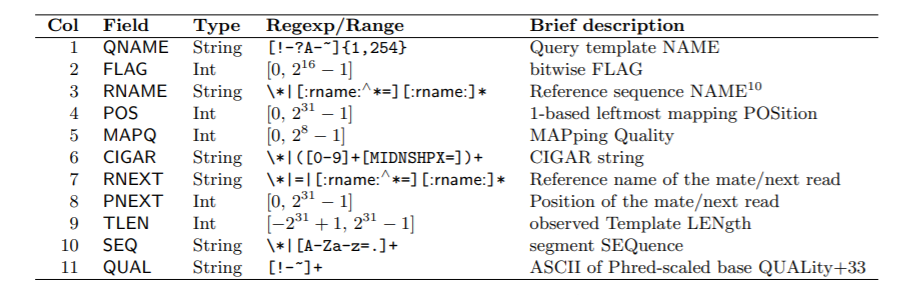
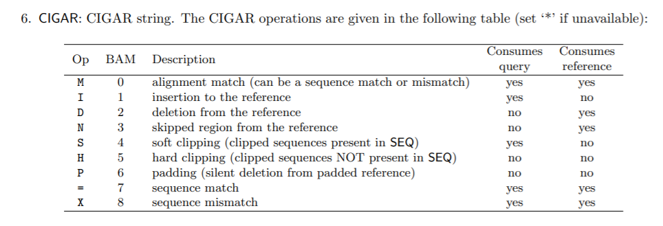
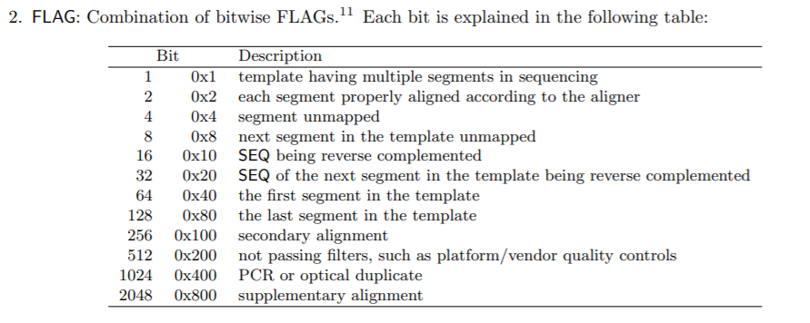
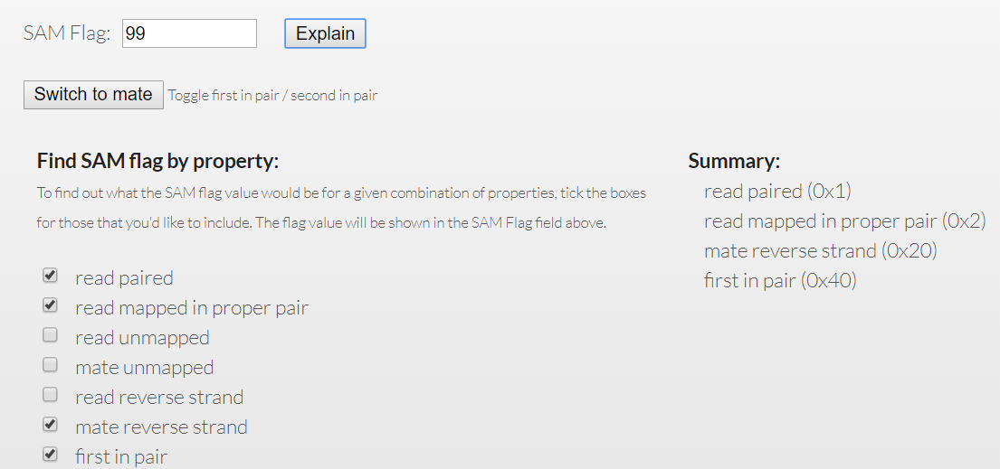
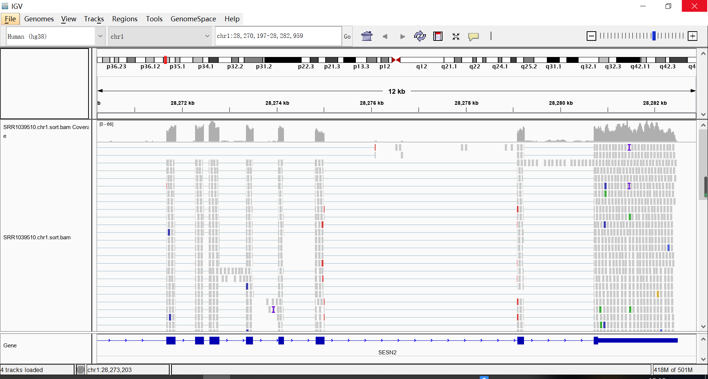

SAM/BAM
当测序得到的fastq文件map到基因组之后，用sam（Sequence Alignment/Map）统一格式来表示这种mapping结果，bam是sam的二进制文件(b binary)。sam文件由注释信息和比对结果两部分组成。
- 注释信息（header section）
- @HD，说明符合标准的版本、对比序列的排列顺序
- @SQ，参考序列说明
- @RG，比对上的序列（read）说明
- @PG，使用的程序说明
- @CO，任意的说明信息
- 比对结果（alignment section）
- 通过11个tab隔开的字段来表示，11个必须字段+可选字段
- 每一行表示一个read的比对信息

1 | @HD VN:1.0 SO:unsorted |
1 | r1 147 gi|9626243|ref|NC_001416.1| 18430 42 198M = 18401 -227 GTGACGATAGCTGAAAACTGTACGATAAACGGTACGCTGAGGGCGGAAAAAATCGTCGGGGACATNGTANAGGCGGCGAGCGCGGCTTTNCCGCGCCAGCGTGAAAGCAGTGTGGACTGGCCGTCAGGTACCCGTACTGTCACCGTGACCGATGACCATCCTTTTGATCGCCAGATAGTGGTGCTTCCGCTGACGTTN B+9+D)1"7>:@=D&D0@:@7:10@;<CA9>('A5D*G0@>!6%+,B<(%@#+8$@$+!-1=1::@:;99E((>--9H>H))"?8&4-9#C:E*#&?D@6!;6'-@&$3>2.11,?AG9?-:?CBA.?1#+!0$@?C'*=B#/&:F&/-,E<>-F#++)/B0:2!E;.D8&?9;+G/2;E=>*<5@94H8CA9&F$?& AS:i:-4 XN:i:0 XM:i:4 XO:i:0 XG:i:0 NM:i:4 MD:Z:65T3A19T107T0 YS:i:-5 YT:Z:CP |
详细看SAM文件说明文档
- samtools: 对SAM/BAM等格式进行各种相关操作的软件，功能最丰富。
- htslib: samtools的C接口，可以通过该库，在C语言中完成samtools的同等功能。
- htsjdk: Java接口
- pysam: Python接口
sam和bam格式文件的shell小练习
首先使用bowtie2软件自带的测试数据生成sam/bam文件，代码如下：
1 | mkdir -p ~/biosoft |
1.统计共多少条reads(pair-end reads这里算一条)参与了比对参考基因组
1 | grep -v '^@' tmp.sam|cut -f 1 |uniq |wc -l |
^@ 以@开头，质量评分中也会有@
cut -f 1 |uniq 由于pair-end reads这里算一条
2.统计共有多少种比对的类型(即第二列数值有多少种)及其分布。
1 | grep -v '^@' tmp.sam|cut -f 2|sort|uniq -c|sort -k 1 -nr |
-k 1 按第一列排序，-n 按数字大小排序， -r 逆序
3.筛选出比对失败的reads，看看序列特征。
1 | $ grep -v '^@' tmp.sam|awk '{if($6=="*")print$10}'|head -2 |
第六列为*比对失败，序列特征：含有较多N碱基
4.比对失败的reads区分成单端失败和双端失败情况，并且拿到序列ID
单端失败
1
$ grep -v '^@' tmp.sam|awk '{if($6 =="*") print$1}'|sort -n |uniq -c |grep -w 1
双端失败
1
$ grep -v '^@' tmp.sam|awk '{if($6 =="*") print$1}'|sort -n |uniq -c |grep -w 2
单端失败 grep -w 1 出现一次；双端失败 grep -w 2 出现两次
5.筛选出比对质量值大于30的情况（看第5列）
1 | $ grep -v '^@' tmp.sam|awk '{if($5>30)print}'|less -S |
6.筛选出比对成功，但是并不是完全匹配的序列
1 | $ grep -v '^@' tmp.sam|awk '$6~"[IDNSHPX]" {print}' |less -S |
以下代码序列信息丢失
1 | $ grep -v '^@' tmp.sam|cut -f 6|grep '[IDNSHPX]'|less -S |
7.筛选出inset size长度大于1250bp的 pair-end reads
1 | $ grep -v '^@' tmp.sam|awk '{if($9>1250||$9<-1250)print}'|less -S |
8.统计参考基因组上面各条染色体的成功比对reads数量
1 | $ grep -v '^@' tmp.sam|cut -f 3|sort|uniq -c |
9.筛选出原始fq序列里面有N的比对情况
1 | $ grep -v '^@' tmp.sam|awk '$10~"N"{print}'|less -S |
10.筛选出原始fq序列里面有N，但是比对的时候却是完全匹配的情况
1 | $ grep -v '^@' tmp.sam|awk '$6!~"[IDNSHPX*]" && $10~"N"{print}'|less -S |
11.sam文件里面的头文件行数
1 | $ grep -c '^@' tmp.sam |
12.sam文件里每一行的tags个数一样吗;
13.sam文件里每一行的tags个数分别是多少个
1 | $ grep -v '^@' tmp.sam |cut -f 12-|head -2 |
14.sam文件里记录的参考基因组染色体长度分别是？
1 | $ grep '^@' tmp.sam|grep 'LN' |
15.找到比对情况有insertion情况的
1 | $ awk '{if($6 ~"I")print}' tmp.sam|less -S |
16.找到比对情况有deletion情况的
1 | $ awk '{if($6 ~"D")print}' tmp.sam|less -S |
17.取出位于参考基因组某区域的比对记录，比如 5013到50130 区域
1 | $ awk '{if($4>5013 && $4<50130) print}' tmp.sam|less -S |
18.把sam文件按照染色体以及起始坐标排序
1 | $ grep -v '^@' tmp.sam|awk '{if($4!=0)print}'|sort -k 4 -n|less -S |
19.找到 102M3D11M 的比对情况，计算其reads片段长度。
1 | grep "102M3D11M" tmp.sam |awk '{print length($10)}' |
以下代码多一个估计是算上了\t
1 | $ grep "102M3D11M" tmp.sam |cut -f 10|wc -m |
20.安装samtools软件后使用samtools软件的各个功能尝试把上述题目重新做一遍。
尴尬而不失礼貌地微笑.jpg
概念
1.高通量测序数据分析中，序列与参考序列的比对后得到的标准文件为什么文件？
sam文件
2.sam文件是一种比对后的文件，能直接查看吗？
less直接查看
3.Sam/Bam文件分为两部分，一部分以@开头的是什么序列，另一部分是什么序列？
@开头的为标头注释信息，另一部分为比对结果
4.Sam文件除头文件，以什么符号分割文本的，比对部分信息一行是多少列？你能用awk计算列数吗？
通过11个tab隔开的字段来表示，11个必须字段+可选字段
1 | grep -v "^@" tmp.sam|awk '{print NF}'|sort|uniq -c |
5.Sam/Bam文件的@SQ开头的行是什么？你能生成一个文本，两列，一列是参考基因组染色体/sca id，一列是长度吗？
@SQ：参考序列说明
1 | $ grep ^@SQ tmp.sam|cut -f 2,3 |
6.Sam文件的比对位置是从1还是0开始的？
从1开始
7.常见CIGAR 字符串各字母代表的意义

8.比对质量的数字是哪一列？越大比对质量越好还是越小越好？
第五列，越大越好。
9.Sam文件的flag是第几列，数字代表什么意义？是怎么计算来的？
第二列，多个数字相加得到。

一般flag值不需要自己去算，直接将flag值导入网站即可
http://broadinstitute.github.io/picard/explain-flags.html
例如某条reads的第二列是99。99=1（ template having multiple segments in sequencing）+ 2（each segment properly aligned according to the aligner）+ 32（SEQ of the next segment in the template being reverse complemented）+ 64（the first segment in the template）

10.Sam文件怎么转bam文件？用什么指令？为什么要转换？
1 | $ samtools view -bS tmp.sam >tmp.bam |
bam为二进制文件，占用内存小
11.Bam文件查看用什么指令？如果需要查看头文件需要增加参数？
1 | $ samtools view tmp.bam|less -S |
查看头文件
1 | $ samtools view -H tmp.bam |
12.Bam文件为什么要排序？排序后的bam和未排序的bam头文件和chr position列有什么区别？
Bam 文件 sort 之后体积会变小，二进制文件相似内容在一起可以提高压缩比
1 | $ samtools sort tmp.bam > tmpsort.bam |
SO由unsorted变为coordinate
1 | $ samtools view -H tmp.bam|head -1 |
sort 后的POS从小到大排了
1 | $ samtools view tmp.bam|cut -f 4|head |
13.Bam文件建索引的指令是什么？
1 | $ samtools index <tmp.bam> out.index |
或者
1 | $ samtools sort tmp.bam > tmp.sort.bam |
14.Bam文件可视化用什么工具？查看时需要建立索引吗？
igv可视化，需要建立索引
15.Bam文件统计reads比对情况用samtools的哪一个子命令？
这之前先sort & index
1 | $ samtools idxstats tmp.sort.bam |
- 第一列：染色体名称
- 第二列：序列长度
- 第三列：mapped reads数
- 第四列：unmapped reads数
16.SE测序和PE测序的所比对后得到的sam文件的区别在哪里？
单末端序列(singleendSE)比对和双末端序列(pairendPE)比对
17.Bam能用gzip再压缩吗？
bam可以压缩，但是压缩比不够（有一个国产软件，gtx.zp好像不错）
1 | $ tar -zcvf tmp.tar.gz tmp.bam |
压缩前后文件并没有明显减小
18.Sam文件通常由哪些比对软件得到的
bowtie2 bwa
19.Sam/Bam文件能转成fastq文件吗？
能啊，二者都是fastq文件经过序列比对或者mapping后输出的格式（其储存的信息都是一致的）
有相应的工具
20.有时候不能通过文件名的后缀来区别是sam还是bam，你是怎么区别的？
sam文件可以直接文本查看，而bam文件为二进制文件需要samtools view
1 | $ less tmp.bam |
按y可见乱码
IGV可视化
- 安装软件：JAVA version 8，IGV
- 打开igv.bat
igv比较耗内存，可以考虑编辑igv.bat，比如用VScode打开igv.bat，尝试将
1 | start %JAVA_CMD% -showversion --module-path=%BatchPath%\lib -Xmx4g -Dproduction=true @%BatchPath%\igv.args -Djava.net.preferIPv4Stack=true -Dsun.java2d.noddraw=true --module=org.igv/org.broad.igv.ui.Main %* |
中的-Xmx4g改为-Xmx1g或更小，但我不改，相比之下，我更需要好点的网。。。已经下载的基因组在C:\Users\用户名\igv\genomes
- 查看bam文件
为bam文件建立索引，生成一个.bai文件，两者放入同一文件夹下，它根据文件名自动和.bam关联，最后将bam导入IGV中
1 | samtools sort tmp.bam > tmp.sort.bam |
载入bam后，默认会出现两个track:
- Coverage track 显示覆盖率和测序深度
- Alignment track 显示每个reads的比对情况

tip：按住alt可以避免黄色提示出现